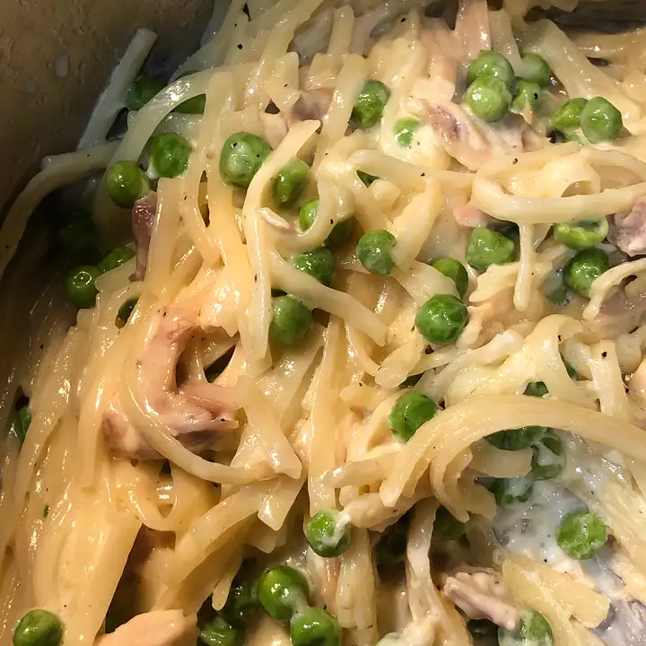

Ham and Asparagus Fettucine

Description
Classic Italian Pasta
Ingredients
- 12 ounces of fettucini noodles
- 1/2 cup butter
- 2 cups heavy cream
Steps
- Step 1
Bring a large pot of lightly salted water to a boil. Add pasta and cook for 8 to 10 minutes or until al dente. Stir asparagus into pot in the last five minutes of cooking; drain.
- Step 2
While pasta is cooking, heat butter and cream in a medium saucepan over medium heat. When mixture begins to bubble, stir in Parmesan, garlic powder, pepper and cayenne. Continue cooking until mixture thickens, stirring occasionally. Stir in ham and heat through.
- Step 3
Toss pasta and asparagus with sauce and serve immediately.